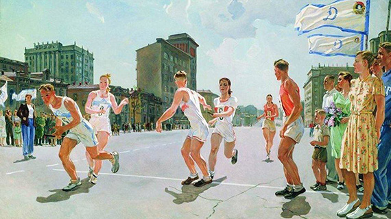
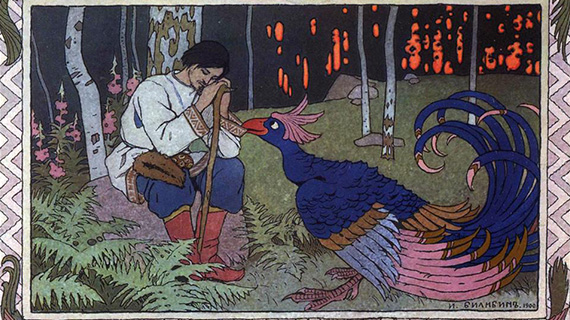
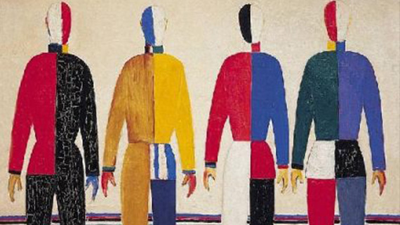
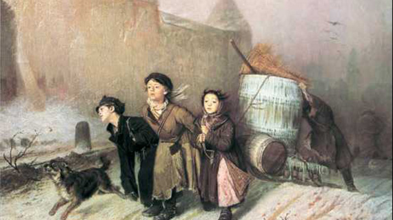
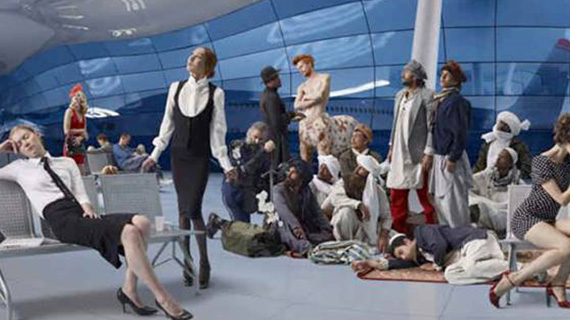

КУРС ЛЕКЦИЙ ПО РУССКОМУ ИСКУССТВУ
- 
- 
- 
- 
-

- 
Искусствоведам практически невозможно объяснить, что русское искусство - это уникальное явление, ведь им по роду деятельности известны все заимствования, понятно, откуда растут и куда бегут ноги, тогда как публике периодически под разными соусами подаются блюда из серии “особый путь русского искусства”. Думаете мы не любим русское искусство? Наоборот. Именно любовь к нему и создала этот курс, который поможет понять, что же действительно уникального и знакового произошло в отечественном искусстве и как эти события встроены в мировой контекст. Мы предлагаем не запоминать факты, а научиться видеть связи и самостоятельно понимать процессы, происходящие и происходившие в русском искусстве.
Список лекций
Лекцию читает
Максимом Юдовым
Эксперт.
«Особый путь» русского искусства.
СЕН
03
20.00
Библиотека им. И. С. Тургенева
Бобров переулок, д. 6 стр.1
«В самом деле, что такое для нас петровская реформа, и не в будущем только, а даже и в том, что уже было, произошло, что уже явилось воочию? Что означала для нас эта реформа?» - вслед за Ф. М. Достоевским на лекции мы попытаем ответить на вопрос, о том, как заимствование западноевропейской культуры отразилось на развитии русского искусства. Так ли самобытно было допетровское искусство? Существует ли особый язык русского искусства, принципиально отличающий его от западноевропейского? Каким русское искусство представлялось соотечественникам и иностранцам в XVIII, XIX, XX веке? Вот некоторые вопросы, которые мы обсудим с нашим экспертом Максимом Юдовым, создателем авторских экскурсий по Третьяковской галерее, Москве и другим городам России.
Лекцию читает
Ольга Чуворкина
аспирант и преподаватель РГГУ
Передвижники: художественный переворот.
СЕН
10
20.00
Библиотека им. И. С. Тургенева
Бобров переулок, д. 6 стр.1
Знаете ли вы, кого иронично называют художниками “Родной речи”? Авторов изображений, использовавшихся (и продолжающих использоваться) в школьных учебниках. И, несмотря на то, что эта традиция сложилась в советском образовании, большинство изображений вовсе не социалистический реализм, а работы художников XIX века, значительная часть которых так или иначе взаимодействовала с Товариществом передвижных художественных выставок.
Отдавая дань уважения признанным мастерам, мы считываем эти образы интуитивно, не задумываясь о том, что стояло за ними на момент создания, насколько разных художников объединила идея передвижных выставок, с какими явлениями мирового искусства перекликаются “исконно русские” Передвижники. Фактически при взгляде на эти условно “всем известные” произведения мы даже не пытаемся считать образы, созданные Суриковым, Репиным или Саврасовым, ведь у нас уже есть те, которые родились в нашей (или не в нашей) голове во время написания школьных сочинений по картинам или прослушивания школьных же экскурсий в музее. Мы предлагаем на время забыть все, что Вы знали о Передвижниках и попытаться представить себе атмосферу, в которой развивалось их искусство.
На встрече Ольга Чуворкина (аспирант и преподаватель РГГУ) расскажет о том, чем было искусство Передвижников в глазах их современников, о корнях и судьбах движения, о специфике живописи отдельных художников и русском искусстве 2-ой половины XIX в. среди европейских школ, о мифах прежних и настоящих.
Лекцию читает
Елизавета Боровикова
Искусствовед и сотрудник аукционного дома “Гелос”
Русский модерн в среде мировых модернов.
СЕН
17
20.00
Библиотека им. И. С. Тургенева
Бобров переулок, д. 6 стр.1
Особенностью модерна стало обращение к национальному искусству, поэтому в каждой стране это направление приобрело свой неповторимый колорит. И русский модерн не исключение. Зачастую искусство модерна ассоциируется с архитектурой, мы же обратимся к изобразительному искусству.
Уникальные центры художественной жизни модерна: Талашкино, Абрамцево, Поленово открывают совершенно новый формат взаимоотношений художник-искусство-зритель. Мы увидим, как в рамках одного направления стерлась граница между “высокими” и “низкими” жанрами, как искусность стала целью искусства и как достигло своих высот русское меценатство, вскоре исчезнувшее в мясорубке революции.
На лекции Елизаветы Боровиковой (искусствоведа и сотрудника аукционного дома “Гелос”) мы поговорим не только о таких знаковых мастерах этого периода как Врубель или Билибин, но и об авторах провинциальных и не столь именитых, творчество которых сказало об эпохе не меньше.
Лекцию читает
Екатерина Кинякина
Искусствовед и редактор культурного раздела информационного портала Москва 24
Почему так важен русский авангард?
СЕН
24
20.00
Библиотека им. И. С. Тургенева
Бобров переулок, д. 6 стр.1
Кто не знает русский авангард? Все знают русский авангард! А кто не знает, пусть вспомнит “Черный квадрат”. Если и есть что-то в русском искусстве, значение чего признается всеми и повсюду - это, конечно, авангард.
Возможно, Вы по умолчанию признаете величие русского авангарда или внутренне ажиотаж вокруг него Вам непонятен, в любом случае, разговор с Екатериной Кинякиной, искусствоведом и редактором культурного раздела информационного портала Москва 24, будет полезен всем, вне зависимости от отношения к этому направлению. Ведь авангард - это неисчерпаемый источник идей, актуальных и в наше время.
Лекцию читает
Ольга Турчина.
Научный сотрудник ММОМА, кандидат искусствоведения
Советское искусство: официальное и неофициальное.
ОКТ
01
20.00
Любая тоталитарная власть экспроприирует и использует в своих целях все системы и явления, включая культуру. Ибо всё должно работать на поддержание режима. В Советском союзе авангард, который художники видели как раз “новым” искусством, очень быстро был отвергнут властью: слишком много художественности, слишком мало конкретики. Идеология нуждалась в искусстве, которое будет работать в практических целях: мотивировать к труду и славить партию, без всяких там абстракций, желательно, вообще, без необходимости активизировать мыслительные процессы.
Таким искусством стал социалистический реализм, со времен перестройки громогласно подвергающийся критике. Однако тихая критика, другая просто не выживала, официальной культурной политики существовала всегда, традиции авангарда и редкие новости западного искусства легли в основу андеграундного искусства.
О художественной жизни в Советском Союзе, противостоянии художников, как в официальном, так и в неофициальном искусстве, соцреализме, концептуализме и соц-арте в лекции научного сотрудника ММОМА, кандидата искусствоведения Ольги Турчиной.
Лекцию читает
Екатерина Новокшонова.
Сотрудник отдела выставок ММОМА
«Перестройка» русского искусства.
ОКТ
10
20.00
Современное искусство – это мир вокруг нас. Как же произошло так, что раньше искусство находилось на определенной территории, специально выделенной для него, как то музей, частное собрание и так далее, а теперь оно среди нас и мы можем встретить его не только, например, на улице, но и в любом пространстве?
Для того, чтобы ответить на этот вопрос относительно российского искусства, необходимо обратиться к такому важному и поворотному периоду в истории СССР как конец 80-х – начало 1990 – х годов ХХ века, как Перестройка. Это время, когда в общественной жизни провозглашается политика гласности, происходит улучшение отношений с Западом и, как результат, снимается цензура, - все это оказало влияние на актуальное искусство.
“Догоним и перегоним Запад, но не по надою молока и производству мяса на душу населения, а по постмодернистским достижениям!” – вот какой лозунг следовало бы носить в эти годы по улицам. Всем тем, кому интересно наконец понять, как происходил поворот в сторону показа актуального времени и проблем в российском искусстве адресована лекция специалиста отдела выставок ММОМА Екатерины Новокшоновой.